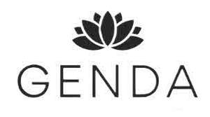

Trade Mark Journal No.2025/013 28 March 2025
UK00004173845 14 March 2025 (3,5)

- Class 3
- Eyes make-up; Eyes pencils; Colour cosmetics for the eyes; Eye shadows; Liners [cosmetics] for the eyes; Creams (Non-medicated -) for the eyes; Eye shadow; Cleansing products for the eyes; Eye concealers; Eye make-up; Eye makeup; Eye pencils; Cosmetic creams for firming skin around eyes; Eye creams; Eye cream; Eye sticks; Eye lotions; Eye cosmetics; Eye stylers; Cosmetic preparations for eye lashes; Eye gels; Eye brightening correctors; Eye liner; Eye wrinkle lotions; Eye gel; Under eye correctors; Cosmetic eye pencils; Sun protectors for lips; Eye make-up removers; Eye make up remover; Eyelashes; Face and body glitter; Cosmetics in the form of eye shadow; Face glitter; Gel eye masks; Eyelid shadow; Make-up for the face and body; Toning lotion, for the face, body and hands; Eye makeup remover; Face wipes; Make-up for the face; Hair glaze; Liquid soaps for hands and face; Eye correction serum; Face and body creams; Cosmetic eye gels; Face blusher; Face and body masks; Skin, eye and nail care preparations; Face creams; Cosmetic pencils for cheeks; Eyebrow colors; Eyebrow mascara; Beauty masks for hands; Face wash; Eyebrows [false]; Face paint; Make-up preparations for the face and body; Eye compresses for cosmetic purposes; Pressed face powder; Face and body lotions; Face powder; Face masks; Mouth washes; Face powders; Cosmetic paste for application to the face to counteract glare; Cheek colors; Cosmetic white face powder; Face paints; Face wash [cosmetic]; Cosmetics for eye-brows; Artificial eyelashes; Powder for forming sculpted finger nail tips; Throat sprays [non-medicated]; Non-medicated mouth sprays; Cheek colours; Spray cleaners for freshening athletic mouth guards; Lip rouge; Lip pencils; Cheek rouges; Body mask powder; Mouth [breath] fresheners, not for medical use; Lip liner; Lip tints; Lip cream; Non-medicated mouth rinse; Face scrub; Face powder [for cosmetic use]; Lip makeup; Cosmetic preparations for the care of mouth and teeth; Body mask cream; Exfoliants for the cleansing of the skin; Acne cleansers, cosmetic; Exfoliant creams; Skin cleansers; Skin cleansing cream; Pores tightening mask packs used as cosmetics; Exfoliating creams; Skin moisturizer; Skin cleansing cream [non-medicated]; Skin cleansing lotion; Skin whitening creams; Creams (Skin whitening -); Skin cleansers [cosmetic]; Facial concealer; Skin moisturizer masks; Cream for whitening the skin; Whitening the skin (Cream for -); Exfoliating scrubs for the face; Skin cleansers [non-medicated]; Tissues impregnated with a skin cleanser; Skin moisturiser; Exfoliants for the care of the skin; Skin lighteners; Make-up remover; Skin make-up; Cuticle removers; Exfoliating body scrub; Moisturising skin creams [cosmetic]; Non-medicated skin serums; Cosmetics for use in the treatment of wrinkled skin; Skin moisturisers; Exfoliants; Skin toner; Wipes impregnated with a skin cleanser; Skin creams; Creams for the skin; Cosmetic creams for dry skin; Skin soap; Creams for firming the skin; Cloths impregnated with a skin cleanser; Facial cleansers; Cosmetic creams for the skin; Skin creams [cosmetic]; Skin creams [for cosmetic use]; Blemish balm creams; Facial cleansing grains; Skin lotion; Skin moisturizers; Creams for cellulite reduction; Non-medicated skin creams; Skin creams [non-medicated]; Make-up removers; Skin cream [for cosmetic use]; Skin relief serum [cosmetic]; Microdermabrasion polish; Facial cleansers [cosmetic]; Skin clarifiers; Skin fresheners; Skin cream; Cosmetic skin fresheners; Nail enamel remover; Non medicated skin toners; Skin masks; Clay skin masks; Concealers for spots and blemishes; Facial moisturisers [cosmetic]; Moisturising skin lotions [cosmetic]; Skin toners [cosmetic]; Skin cleaners [non-medicated]; Nail varnish remover [cosmetics]; Lotions for cellulite reduction; Cleansing creams [cosmetic]; Cosmetics for the treatment of dry skin; Facial makeup; Skin moisturizers used as cosmetics; Skin toners; Skin balms [cosmetic]; Skin hydrators being injectable dermal fillers; Skin hydrators; Skin masks [cosmetics]; Creams for tanning the skin; Softening cleanser [cosmetic]; Facial creams; Cleansing creams; Wrinkle removing skin care preparations; Facial creams [cosmetic]; Facial creams [for cosmetic use]; Anti-wrinkle creams [for cosmetic use]; Facial moisturizers; Skin polishing rice bran (arai-nuka); Gel nail removers; Facial lotion; Skin fresheners [cosmetics]; Make-up removing creams; Nail enamel removers; Facial toner; Wrinkle resistant creams [for cosmetic use]; Skin whitening preparations [cosmetic]; Anti-wrinkle creams; Exfoliating scrubs for the body; Non-medicated cleansing creams; Skin lotions; Lotions for the skin; Dermatological creams [other than medicated]; Anti-aging moisturizers; Dandruff shampoo; Non-medicated skin lotions; Anti-aging creams; Skin lightening creams; Cosmetic creams for skin care; Skin care creams [cosmetic]; Non-medicated scalp treatment cream; Cosmetics for protecting the skin from sunburn; Anti-aging moisturizers used as cosmetics; Anti-ageing moisturiser; Anti-aging creams [for cosmetic use]; Skin care lotions [cosmetic]; Facial creams [cosmetics]; Skin recovery creams [cosmetics]; Milky lotions for skin care; Anti-ageing creams; Anti-ageing creams [for cosmetic use]; Hair moisturizers; Body and facial creams [cosmetics]; Skin balms (Non-medicated -); Non-medicated skin balms; Facial lotions; Anti-aging cream; Skin emollients; Non-medicated skin clarifying lotions; Hair moisturisers; Cosmetic facial lotions; Facial lotions [cosmetic]; Spot remover; Stain removers; Wrinkle resistant cream; Rust removers; Skin lightening compositions [cosmetic]; Lip stains for cosmetic purposes; Wrinkle resistant creams; Pet stain removers; Lip stains [cosmetics]; Fair complexion cream; Facial washes [cosmetic]; Cosmetic patches containing sunscreen and sun block for use on the skin; Age spot reducing creams for cosmetic use; Stain removing benzine; Skin foundation; Concealers for lines and wrinkles; Cosmetic skin enhancers; Cosmetic preparations for skin firming; Facial cream [for cosmetic use]; Stain removing preparations; Face powders [for cosmetic use]; Cosmetic face powders; Cosmetic preparations for skin renewal; Nail polish remover; Cosmetics for use on the skin; Paint remover; Spot removers [preparations]; Skin hydrators for cosmetic purposes; Fair complexion creams; Cosmetic preparations against sunburn; Body paint (cosmetic); Facial toners [cosmetic]; Nail polish removers [cosmetics]; Gel eye patches for cosmetic purposes; Age spot reducing creams; Skin care oils [cosmetic]; Colour cosmetics for the skin; Hair removing cream; Moisturising body lotion [cosmetic]; Cosmetic oils for the epidermis; Nail polish removers; Hair color removers; Cleansing balm; Shaving stones [astringents for cosmetic purposes]; Shaving stones being astringents for cosmetic purposes; Smoothing emulsions for the skin; Face creams for cosmetic use; Cosmetic body mud; Patches containing sun screen and sun block for use on the skin; Fingernail overlay material; Fingernail decals; Gel scrub; Cotton wool in the form of wipes for cosmetic use; Nail polish base coat; Scented fabric refresher spray; Boot polish; Non-medicated diaper rash cream; Oils for the skin; Skin conditioners; Skin texturizers; Skin care cosmetics; Moisturizing preparations for the skin; Skin care mousse; Skin calming serum; Skin cleansing foams; Essences for skin care; Skin emollients [non-medicated]; Foot masks for skin care; Cleansing milks for skin care; Perfumed oils for skin care; Skin care oils [non-medicated]; Skin whitening preparations; Oils for moisturising the skin after sunbathing; Hand masks for skin care; Skin care preparations; Skin tonics [non-medicated]; Horse oil cream for skin care; Non-medicated stimulating lotions for the skin; Skin softening preparations; Skin care (Cosmetic preparations for -); Cosmetic preparations for skin care; Skin care products for animals; Face packs; Face oils; Face gels; Cleaning masks for the face; Loose face powder; Face packs [cosmetic]; Face scrubs (Non-medicated -); Face cream (Non-medicated -); Face powder (Non-medicated -); Face dusting powders; Creamy face powder; Lotions for face and body care; Face lifting stickers for cosmetic use; Beauty tonics for application to the face; Face powder in the form of powder-coated paper; Non-medicated face care preparations; Disposable wipes impregnated with cleansing compounds for use on the face; Facial masks; Facial beauty masks; Facial wash; Body mask lotion; Body masks; Hair masks; Cosmetic facial masks; Facial masks [cosmetic]; Facial washes; Hair and body wash; Shaving gel; Shower gel; Nail gel; After-shave gel; Hair gel; Shave gel; Bath gel; Lavender gel; Tooth gel; Eyebrow gel; Mattifying gel cream; Soaps in gel form; Shower and bath gel; Bath and shower gel; Hair styling gel; Gel sprays being styling aids; Pre-shave gels; Shaving gels; Dental bleaching gel; Shower gels; Aloe vera gel for cosmetic purposes; Refill packs for shower gel dispensers; Hair gels; Preparations for removing gel nails; Dishwasher detergents in gel form; Sun tan gel; Age retardant gel; Aftershave gels; Bath gels; Cleansing gels; Moisturising gels [cosmetic]; Soapy gels; Cosmetics in the form of gels; Moisturising creams, lotions and gels; Foaming bath gels; Styling gels; Hair protection gels; Bath and shower gels; Bath gels (Non-medicated -); Soaps and gels; Hair styling gels; Styling gels for the hair; Gels for use on the hair; Facial gels [cosmetics]; Body gels; Gels for fixing hair; Beauty gels; Body gels [cosmetics]; Tanning gels [cosmetics]; Gels for cosmetic use; Make-up removing gels; Hand gels; Sun-tanning gels; Dental bleaching gels; Gels (Dental bleaching -); Shaving mousse; Body and facial gels [cosmetics]; Glitter in spray form for use as a cosmetics; Shaving lotion; Shaving foam; Foam for use in shaving; Toilet cleaning gels; Hair lotion; Bath and shower gels, not for medical purposes; Baby shampoo mousse; Hair liquid; Shaving preparations in liquid form; Shoe polish and creams; Shaving balm; Shower creams; Nail cream; Moist wipes impregnated with a cosmetic lotion; Non-medicated balm for hair; Shower and bath foam; Bath and shower foam; Hair balm; Colouring lotions for the hair; Nail polish remover pens; Cuticle cream; Shower cream; Liquid eyeliners; Refill packs for skin care cream dispensers; Pre-shave foams; Liquid soap; Nail polishing powder; Soap pads; Oil of turpentine for degreasing; Shower oils; Degreasing sprays; Massage oils and lotions; Massage oil; Shaving oil; Shaving oils; Body oil spray; Baby body milks; Baby bottom balm; Baby lotion; Cosmetic breast firming preparations; Body milk; Facial cleansing milk; Beauty milk; Hair shampoo; Hair shampoos; Hair dye; Hair relaxers; Hair pomades; Hair texturizers; Hair conditioner; Hair mousse; Hair lighteners; Dyes for the hair; Hair dyes; Hair mascara; Hair bleaches; Hair colourants; Hair bleach; Hair serums; Hair cosmetics; Hair lotions; Hair rinses; Hair conditioners; Hair mousses; Hair color; Hair sprays; Hair wax; Hair colouring; Hair styling lotions; Hair oils; Hair spray; Shampoos for human hair; Hair creams; Hair cream; Hair colorants; Hair nourishers; Hair emollients; Hair powder; Styling sprays for the hair; Baby hair conditioner; Hair tonics; Hair chalks; Tints for the hair; Hair oil; Hair styling waxes; Hair lacquer; Hair lacquers; Hair styling spray; Hair balsam; Hair balms; Hair tonic; Styling paste for hair; Non-medicated hair shampoos; Hair rinses [for cosmetic use]; Hair glazes; Cosmetic preparations for the hair and scalp; Hair liquids; Wax treatments for the hair; Vaginal washes for personal sanitary or deodorant purposes; Tissues impregnated with cosmetics; Tissues impregnated with cosmetic lotions; Lotions (Tissues impregnated with cosmetic -); Body milks; Artificial fingernails; Non-medicated mouth washes; Impregnated tissues for cleaning [non-medicated, for use on the person]; Moist paper hand towels impregnated with a cosmetic lotion; Anti-ageing serum; Hair care serum; Anti-aging serum for cosmetic use; Facial serum for cosmetic use; Beauty serums; Hairstyling serums; Hair care serums; Moisturizing milk; Beauty serums with anti-ageing properties; Moisturiser; Non-medicated moisturisers; Moisturizing creams; Moisturizers; Anti-ageing serums for cosmetic purposes; Hair moisturising conditioners; Cosmetics containing hyaluronic acid; Moisturizing body lotions; Moisturisers; Moisturising creams; Non-medicated hair lotions; Moisture body lotion; Body moisturisers; Hair tonic [non-medicated]; After-sun milk [cosmetics]; Scalp treatments (Non-medicated -); Creams (Non-medicated -) for the body; Anti-wrinkle cream; Heliotropin; Heliotropine; Sandcloth; Eye care products, non-medicated; Fragrance sachets for eye pillows; Eyelid doubling makeup; Wiping cloth impregnated with a cleaning preparation for cleaning eye glasses; Hand and body butter; Foot deodorant spray; Soap for foot perspiration; Foot perspiration (Soap for -); Beard balm; Wax strips for removing body hair; Body deodorants; Body lotion; Deodorants for the feet; Beard oil; Eyelash tint; Hydrating masks; Cleansing masks; Cosmetic masks; Beauty masks; Masks (Beauty -); Cosmetic mud masks; Hairstyling masks; Mask pack for cosmetic purposes; Hair care masks; Sheet masks for cosmetic purposes; Facial scrubs; Dental polish; Stick pomade; Cover sticks; Joss sticks; Sunscreen sticks; Incense sticks; Shaving sticks [preparations]; Deodorants, for personal use in the form of sticks; Breath fresheners in the form of chew sticks made from birchwood extracts; Cotton sticks for cosmetic purposes; Dentifrices in the form of chewing gum; Abrasive paper for use on the fingernails; Cleaner for cosmetic brushes; Toothpaste; Mouthwash; Swallowable toothpaste; Teeth cleaning lotions; Teeth whitening pens; Non-medicated toothpaste; Toilet bowl detergents; Toilet soap; Non-medicated dental rinse; Toothpastes; Dentifrice; Makeup; Make-up; Nail makeup; Theatrical makeup; Natural makeup; Make-up primer; Organic makeup; Make-up primers; Powder for make-up; Make-up powder; Powder (Make-up -); Multifunctional makeup; Make-up pencils; Foundation make-up; Make-up foundation; Make-up for compacts; Make-up foundations; Make-up palettes containing cosmetics; Chalk for make-up; Make-up removing lotions; Make-up kits; Make-up base; Make-up preparations; Makeup setting sprays; Skincare cosmetics; Make-up removing preparations; Make-up removing milks; Make-up removing milk; Eyeliner; Cosmetics for the use on the hair; Cosmetics; Lip cosmetics; Cosmetic hair lotions; Compacts containing make-up; Eye-shadow; Mascara; Fake blood being theatrical make-up; Eyeshadow; Cosmetics for eye-lashes; Nail primer [cosmetics]; Eyebrow cosmetics; Moisturisers [cosmetics]; Nail cosmetics; Lipstick; Nail paint [cosmetics]; Cosmetic hair dressing preparations; Eyeshadow palettes; Self-tanning preparations [cosmetics]; Hair care lotions [for cosmetic use]; Body creams [cosmetics]; Hair care creams [for cosmetic use]; Colour cosmetics; Facial wipes impregnated with cosmetics; Beauty preparations for the hair; Night creams [cosmetics]; Beauty care cosmetics; Styling lotions; Decorative cosmetics; Cosmetic products for the shower; Mousses [toiletries] for use in styling the hair; Multifunctional cosmetics; Functional cosmetics; Cosmetics and cosmetic preparations; Mousses [cosmetics]; Cosmetic products in the form of aerosols for skincare; Cosmetics for suntanning; Organic cosmetics; Non-medicated cosmetics; Natural cosmetics; Cosmetics preparations; Cosmetics in the form of lotions; Tanning oils [cosmetics]; Suncare lotions [for cosmetic use]; Cosmetics for animals; Tanning preparations [cosmetics]; Milks [cosmetics]; After-sun oils [cosmetics]; Tanning milks [cosmetics]; Suntan oils [cosmetics]; Fluid creams [cosmetics]; Suntan lotion [cosmetics]; Cosmetics for children; Non-medicated cosmetics and toiletry preparations; Humectant preparations [cosmetics]; Emollient preparations [cosmetics]; Cosmetics in the form of creams; Powder compacts [cosmetics]; Sun-tanning preparations [cosmetics]; Suntanning oil [cosmetics]; After-sun milks [cosmetics]; Cosmetic moisturisers; Sunscreens [for cosmetic use]; Cosmetic creams and lotions; Bath powder [cosmetics]; Sun blocking lipsticks [cosmetics]; Body care cosmetics; Sunscreen creams [for cosmetic use]; Sunscreen [for cosmetic use]; Creams (Cosmetic -); Cosmetic creams; Cosmetic soaps; Cosmetics containing keratin; Cosmetics in the form of powders; Dyes (Cosmetic -); Cosmetic dyes; Cosmetics containing panthenol; After-sun lotions [for cosmetic use]; Beauty lotions; Cosmetics in the form of oils; Cosmetic suntan lotions; Perfume oils for the manufacture of cosmetic preparations; Colour cosmetics for children; Nail hardeners [cosmetics]; Nail tips [cosmetics]; Sun protecting creams [cosmetics]; Smoothing emulsions [cosmetics]; Abrasive sanding sponges; Sponges impregnated with soaps; Sponges impregnated with toiletries; Bath foam; Foam bath; Liquid bath soap; Toothpaste in soft cake form; Liquid soap used in foot bath; Liquid soap for dish washing; Cakes of soap for body washing; Cakes of toilet soap; Liquid soap used in foot baths; Pre-moistened towelettes impregnated with dishwashing detergent; Moistened tooth powder; Cleaning foam; Seaweed gelatine for laundry use (funori); Seaweed gelatine for laundry use [funori]; Pre-moistened towelettes impregnated with a detergent for cleaning; Cleansing foam; Baby bath mousse; Bath pearls; Foam bath preparations; Bath pearls (Non-medicated -); Liquid bath soaps; Cakes of soap; Soap (Cakes of -); Bath soak for cosmetic use; Foam detergents; Body scrub; Exfoliating scrubs for the hands; Exfoliating scrubs for the feet; Foot scrubs; Body scrubs; Hand scrubs; Exfoliating scrubs for cosmetic purposes; Facial scrubs [cosmetic]; Cosmetic body scrubs; Body scrubs [cosmetic]; Scrubbing powder; Cleansing lotions; Pine oils for cleaning floors; Loofah soaps; Waterless soap; Bath lotion; Shave balm; Body wash; Skin cleaning and freshening sprays; Waterless shampoo; Creams (Soap -) for use in washing; Scented fabric refresher sprays; Cleansing oil; Cleansing cream; Eucalyptus oil for cosmetic use; Scented bathing salts; Bath soap; Scented body spray; Bath and shower oils [non-medicated]; Spray polish; Scented toilet waters; Deodorant soap; Soap (Deodorant -); Shower soap; Aloe soap; Retinol cream for cosmetic purposes; Anti-wrinkle cream [for cosmetic use]; Anti-aging skincare preparations; Sunscreen creams; Sunscreen cream; Aftershave moisturising cream; Suntan creams [self-tanning creams]; Hydrating creams for cosmetic use; Cosmetic nourishing creams; After-sun creams; Pre-shave creams; Sunscreens; Sunscreen lotions; Suncare lotions; Liquid dentifrice; Breath freshening strips; Strips (Breath freshening -); Abrasive strips; Teeth whitening strips; Hair piece bonding glue; Cosmetic preparations for dry skin during pregnancy; Baby lotions; Baby suncreams; Baby shampoo; Baby oils; Baby care products (Non-medicated -); Baby wipes; Baby oil; Baby powders; Baby wipes impregnated with cleaning preparations; Shampoos for babies; Baby powder; Tooth whitening creams; Teeth whitening strips impregnated with teeth whitening preparations [cosmetics]; Teeth whitening preparations; Tooth whitening preparations; Tooth whitening pastes; Nail whiteners; Toning creams [cosmetic]; Cosmetic massage creams; Tooth powders [for cosmetic use]; Tooth powder [for cosmetic use]; Sun creams [for cosmetic use]; Soda (Bleaching -); Tanning creams; Bleaching soda; Self tanning creams [cosmetic]; Self-tanning preparations [cosmetic]; Hair bleaching preparations; Bleaching preparations for the hair; Cosmetic tanning preparations; Bleaching preparations; Skin conditioning creams for cosmetic purposes; Depilatory creams; Denture polishes; Polishes (Denture -); Chewable tooth cleaning preparations; Polishing creams; Auto-tanning creams; Preparations for cleaning teeth; Cleaning preparations for the teeth; Preparations for cleaning the teeth; Bleaching preparations for cosmetic purposes; Teeth cleaning (Preparations for -); Dentures (Preparations for cleaning -); Cleaning dentures (Preparations for -); Preparations for cleaning dentures; Abrasive sand; Pumice stones for use on the body; Salt crystal removers; Pumice stone; Artificial pumice stone; Sun tan oil; Foot smoothing stones; Dusting powder; Volcanic ash for cleaning; Ash (Volcanic -) for cleaning; Dusting powder [for toilet use]; Laundry preparations for attracting dirt; Cleaning chalk; Chalk (Cleaning -); Nappy cream [non-medicated]; Facial cream; Non-medicated foot cream; Shaving cream; Shave creams; Shaving creams.
- Class 5
- Eye drops; Nose drops; Eye ointment for medical use; Artificial tears; Eye patches for medical purposes; Mouth cavity cleansers; Decongestant nasal sprays; Ear drops; Medicated mouth spray; Nasal rinse; Medicated throat sprays; Nasal decongestants; Nasal drops for the treatment of allergies; Ear candles; Saline solution for sinus and nasal irrigation; Mouth sprays for medical use; Medicated mouth wash; Antibacterial facial cleanser; Acne medication; Medicated skin creams; Bacteria removers; Mole skin for use as a medical bandage; Acne cleansers [pharmaceutical preparations]; Antibacterial acne preparations; Skin relief serum [medicated]; Bacteria fighting cleanser; Niacinamide preparations for the treatment of acne; Acne medications; Wart pencils; Patches impregnated with acne treatment preparations; Medicated skin lotions; Skin calming serum [medicated]; Acne creams [pharmaceutical preparations]; Acne treatment preparations; Preparations for the treatment of acne; Acne cream [pharmaceutical preparations]; Elixirs for eczema; Elixirs for psoriasis; Antibiotic dermatological products; Medicated creams for treating dermatological conditions; Medicated lotions for treating dermatological conditions; Skin care lotions [medicated]; Medicated nappy rash lotions; Antibiotic creams; Skin tonics [medicated]; Herbal sore skin ointments for pets; Medicinal creams for skin care; Topical anti-infective substances for the treatment of infections of the eye; Skin treatment [medicated] for animals; Ointments for treating nappy rash; Scalp treatments (Medicated -); Pills for tinnitus treatment; Nasal spray for the treatment of allergies; Creams for dermatological use; Transdermal patches; Mosquito-repellent patches for babies; Vitamin supplement patches; Transdermal patches for medical treatment; Skin patches for the transdermal delivery of pharmaceuticals; Adhesive skin patches for medical use; Adhesive nipple patches for medical purposes; Adhesive patches for medical purposes; Nicotine patches for use as aids to stop smoking; Dissolvable strips to stop bleeding from minor cuts and grazes; Worm repellents for use on turf or grass; Heating patches for medical purposes; Adhesive bandages for skin wounds; Adhesive bandages; Medicated diaper rash ointment; Medicated ointments for application to the skin; Bandages for skin wounds; Corn pads; Liquid bandages for skin wounds; Mosquito repellants for application to the skin; Gel scrub, medicated; Beta blockers; Skin grafts; Medicinal creams for the protection of the skin; Skin care oils [medicated]; Elixirs for calming the skin; Face cream (Medicated -); Face scrubs (Medicated -); Medicated face lotions; Anti-bacterial face washes (Medicated -); Air deodoriser gel; Spermicidal gels; Aloe vera gel for therapeutic purposes; Antibacterial gels; Alcohol-based antibacterial skin sanitizer gels; Anti-inflammatory gels; Medicated brush-on oral care gels; Topical first aid gels; Gels for dermatological use; Medicated body gels; Body gels for pharmaceutical use; Liquid bandage sprays; Capillary lotions (Medicated -); Lubricant gels for personal use; Medicated oral care gels; Topical gels for medical and therapeutic use; Sexual stimulant gels; Antiseptic sprays in aerosol form for use on the skin; Anti-adhesion gels for use with wound drainage devices; Moist wipes impregnated with a pharmaceutical lotion; Incontinence pads; Sanitary pads; Nursing pads; Bunion pads; Pads (Bunion -); Menstruation pads; Disposable pads for incontinence; Breast-nursing pads; Pads (Breast-nursing -); Disposable absorbent pads for lining pet crates; Pads for feminine protection; Disposable house training pads for pets; Vaginal lubricants; Hygienic lubricants; Preparations for use in vaginal lubrication; Silicone-based personal lubricants; Water-based personal lubricants; Milking grease; Castor oil as a coating for pharmaceuticals; Spermicides for application to condoms; Lubricants for medical use; Personal lubricants; Panty shields; Sanitary panty shields; Panty shields [sanitary]; Creams (Medicated -) for the lips; Diagnostic strips for testing breast milk for medical purposes; Biopharmaceuticals for the treatment of cancer; Implants (Surgical -) [living tissues]; Pancreatic hormone preparations; Thyroid and parathyroid hormone preparations; Milk powder for babies; Medicines for prevention against milk fever; Biological implants; Surgical implants grown from stem cells; Substitutes for mothers milk; Implants for guided tissue regeneration; Surgical implants grown from stem cells [living tissues]; Powdered milk for babies; Vaginal washes; Vaginal moisturizers; Vaginal antifungals; Menstruation tampons; Menstruation knickers; Knickers (Menstruation -); Disposable menstruation underwear; Tampons; Semen for artificial insemination; Insemination (Semen for artificial -); Orgasm creams; Vaginal washes for medical purposes; Menstruation bandages; Bandages (Menstruation -); Sanitary panties; Panties (Sanitary -); Sanitary tampons; Tampons [sanitary]; Bandages for the oral cavity; Medicated mouth washes; Lotions (Tissues impregnated with pharmaceutical -); Disinfectants impregnated into tissues; Serums; Antitoxic sera; Moisturising body lotion [pharmaceutical]; Moisturising creams [pharmaceutical]; Medicated hair lotions; Babies' nappy-pants; Anti-nauseants; Babies' napkins; Babies' diaper-pants; Diaper-pants (Babies' -); Babies' nappies; Babies' diapers; Napkin-pants (Babies' -); Babies' napkin-pants; Anti-dermoinfectives; Remedies for foot perspiration; Foot perspiration (Remedies for -); Ear bandages; Eye pads for medical use; Eye lotions for medical use; Dental veneers for use in dental restoration; Dental amalgams; Dental anaesthetics; Dental ceramics; Dental adhesives; Dental abrasives; Abrasives (Dental -); Dental resins; Dental composites; Dental cement; Adhesives for dental and dentistry use; Dental wax; Dental mastics; Sticking plasters; Fumigating sticks; Sticks (Fumigating -); Stick liquorice for pharmaceutical purposes; Sticking plasters for medical use; Moxa sticks for moxibustion; Fly glue; Cotton wool in the form of sticks for medical use; Headache relief sticks; Fumigating sticks as disinfectants; Sticking plasters for medical purposes; Mint-flavored chewing gum for medical use; Medicated chewing gum; Calcium chews for medical use; Breath-freshening chewing gum for medicinal purposes; Chewing gum for medical purposes; Dental rinse; Medicated toothpaste; Medicated anti-cavity dental rinses; Tooth prophylactics; Dental materials for packing the teeth; Toilet deodorants; Contraceptive sponges; Vulnerary sponges; Sponges (Vulnerary -); Sponge material for healing wounds; Chemical contraceptive sponges; Moist paper hand towels impregnated with a pharmaceutical lotion; Sponges for healing wounds; Absorbent wadding; Absorbent cotton wadding; Disposable liners of cellulose for napkins; Nappy liners of cellulose for incontinents; Disposable nappy liners; Diaper liners; Antibacterial lathering cleanser; Washes (disinfectant -) [other than soap]; Antiseptic cleansers; Disinfecting handwash; Antibacterial wipes; Antibacterial handwash; Anti-bacterial soap; Hydrocortisone creams; Liquid vitamin supplements; Anti-itch creams; Multi-purpose medicated antibiotic creams; Adhesive dressings; Elastic dressings; Elastic bandages [dressings]; Adhesive plasters; Adhesive dressing strips; Antimicrobial mouthwashes; Pregnancy testing preparations; Pregnancy testing preparations for home use; Baby diapers; Ovulation test kits; Nappies for babies; Diapers for babies; Nappies as baby diapers; Chemical preparations for the diagnosis of diabetes; Contraceptive preparations; Medicated baby oils; Dental varnishes for sealing teeth; Clay for use in mud baths [health spas]; Sediment (Medicinal -) [mud]; Medicinal sediment [mud]; Medicated nappy rash ointments; Nappy cream [medicated]; Sunburn ointments; Corn and callus creams; Foot creams (Medicated -); Hemorrhoidal ointments.
RALPHSKOTH LIMITED